A creative and innovative architect with a strong background in designing functional and aesthetically pleasing spaces. Proficient in integrating modern design principles with practical solutions to meet clients' needs. Experienced in managing projects from concept through completion and adept at collaborating with diverse teams.
Experience
With extensive experience in architectural design, I have successfully led and executed various residential and commercial projects. My expertise includes:
Developing comprehensive architectural plans and designs.
Coordinating with clients, engineers, and contractors to ensure project success.
Utilizing advanced design software and techniques to create innovative solutions.
Education
Graduated with a degree in Architecture from the Kwame Nkrumah University of Science and Technology - KNUST, where I gained a strong foundation in design principles, and building systems. Relevant coursework included advanced design studio, structural analysis, and urban planning.
Skills
Creative Exploration
Exploring unique and imaginative architectural concepts to push the boundaries of traditional design.
Attention to Detail
Meticulous focus on every aspect of design and construction to ensure high-quality results.
Model Making and Product Design
Creating physical and digital models to visualize and refine architectural concepts effectively.
Artistic Sensibility
Applying a refined sense of aesthetics to enhance the visual and functional appeal of spaces.
Architectural Design and Planning
Developing comprehensive design plans that balance functionality, aesthetics, and client needs.
Proficiency in Revit, AutoCAD, SketchUp, Lumion, Corona, and VRay
Skilled in using advanced software for detailed design, visualization, and rendering.
Strong Understanding of Building Codes and Regulations
Ensuring designs comply with all relevant codes and regulations for safety and legality.
Project Management and Client Relations
Managing projects efficiently and maintaining clear communication with clients throughout the process.
Creative Problem Solving and Innovative Design Solutions
Finding innovative solutions to design challenges and creating unique architectural solutions.
Leadership and Team Collaboration
Leading and collaborating with teams to drive projects to successful completion.
Portfolio
Explore my portfolio to see examples of my recent architectural projects and design work.
Work
Eddie's Residence
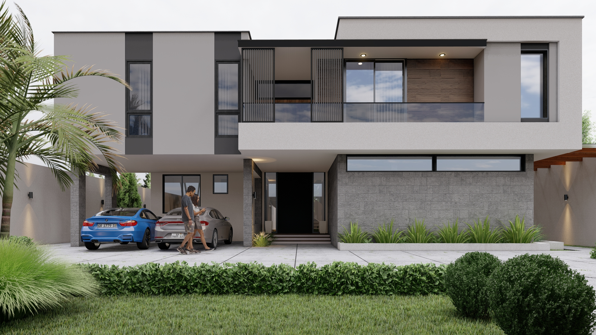
Casa Crispina
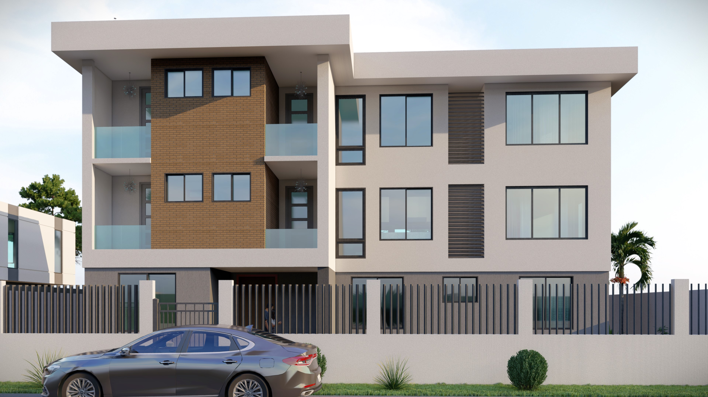
Shama Family House (Net House)
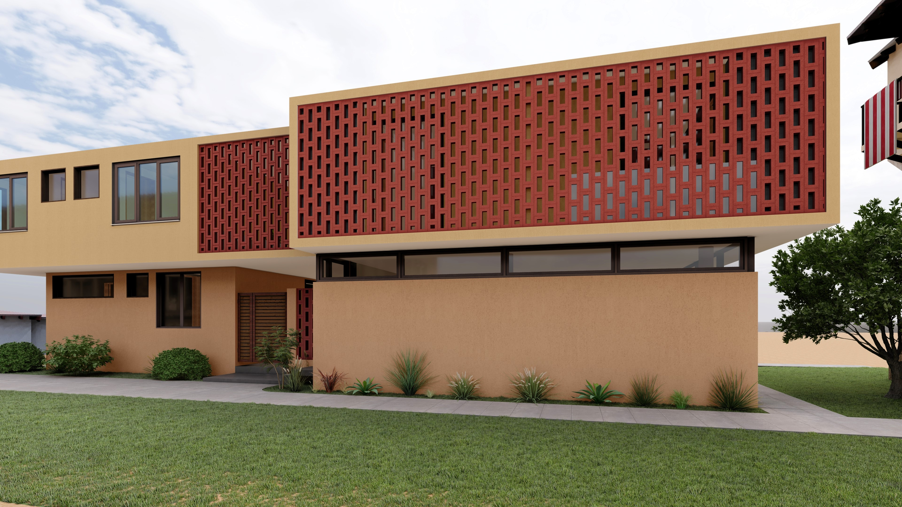
Bentsil Residence
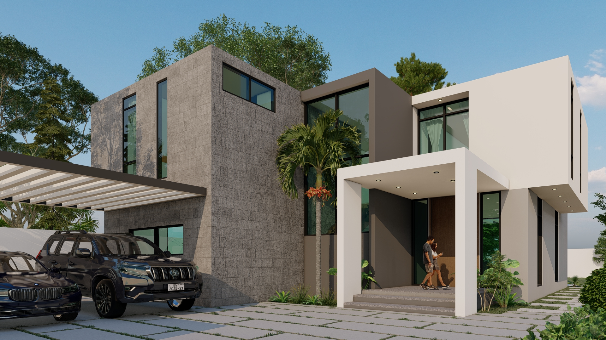
Villa Harmonia
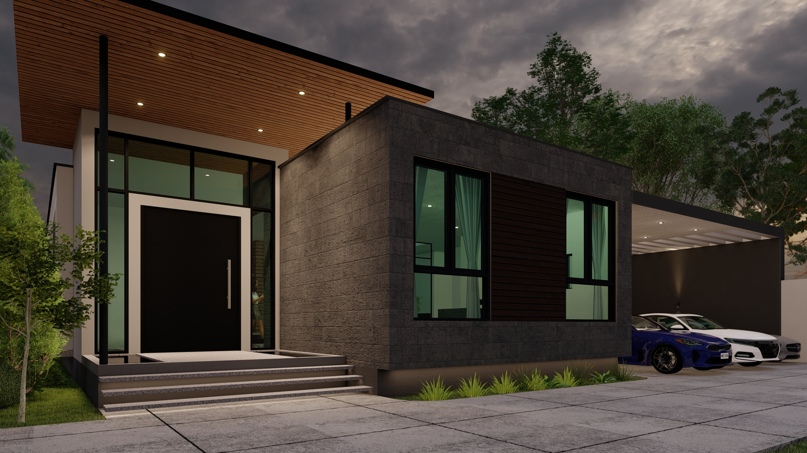
Eddie's Residence
This modern residence was designed with a focus on natural light and open spaces. The use of large windows and minimalist interior design elements creates a seamless blend between indoor and outdoor environments, making it an ideal living space for those who appreciate contemporary aesthetics.
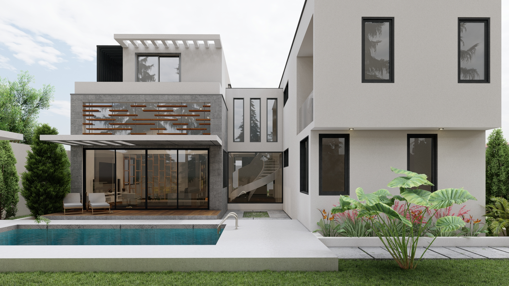
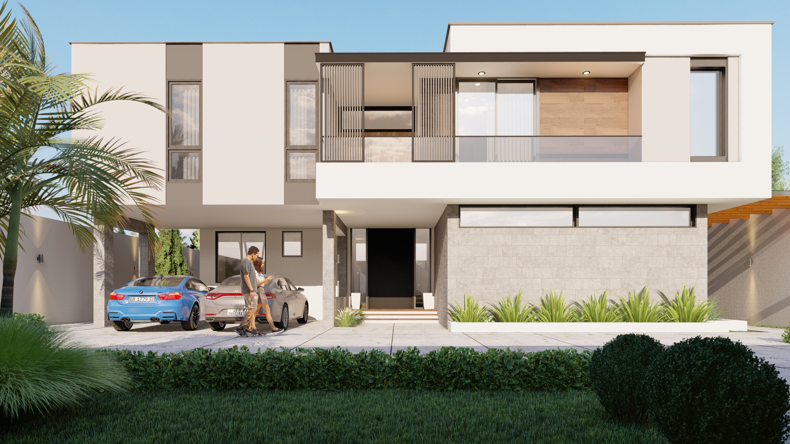
Casa Cripina – Accra, Ghana
Project Type: Residential Location: Accra, Ghana
Description
Casa Cripina was a unique challenge, beginning with an existing ground-floor structure built without architectural consultation or a comprehensive plan. The owner envisioned transforming the building into a modern apartment complex, with provisions for further development already made during the initial construction. This scenario highlights a common issue architects face in Ghana—structures often lack professional input at the early stages, leading to design inefficiencies and limitations.
The project’s primary objective was to give the building a modern facelift while designing two two-bedroom apartments on each floor. The design incorporated open-plan living areas, combining the living room, dining area, and kitchen into cohesive, flowing spaces that maximize usability and comfort.
To enhance the interiors, a modern material palette was employed, blending durability and aesthetic appeal. Large openings were strategically placed to flood the apartments with natural light, creating bright and inviting living spaces that minimize the reliance on artificial lighting during the day.
Key Features
Open-Plan Design: Seamlessly integrated living, dining, and kitchen areas to promote functionality and a sense of spaciousness.
Natural Lighting: Generous openings designed to maximize natural light and ventilation.
Modern Facelift: A fresh material palette brought a contemporary aesthetic to the building, aligning with the client's vision for a modernized structure.
Role
Architectural Designer: Redesigned the structure to create efficient layouts for the apartments while improving the overall aesthetic of the building.
Project Advisor: Guided the client on sustainable and cost-effective material choices to achieve a modern yet budget-friendly outcome.
Conclusion
Casa Cripina exemplifies the transformative power of architectural intervention, showcasing how thoughtful design can adapt an unplanned structure into a functional and modern apartment complex. The project not only met the client’s vision but also addressed broader challenges in the Ghanaian construction landscape by emphasizing the importance of professional architectural involvement from the outset.
The Shama Family House, also known as the “Net House,” was designed on a historic site that once housed the Boadi family’s old residence. Located between Fort San Sebastián and the Gulf of Guinea, the original structure comprised five small bedrooms shared by nuclear and extended family members.
The client’s primary request for the new design was a large space where family members could convene for discussions, gatherings, and wake-keeping ceremonies. This need shaped the project into a semi mixed-use building that seamlessly blends traditional family values with contemporary functionality.
The ground floor features a versatile 60-seater family meeting hall, which can be used for private gatherings or rented out for public events. Adjacent to this is a three-bedroom flat designed for comfort and privacy. The upper floor accommodates six en-suite bedrooms, a spacious living area, and a sitting area, all oriented to maximize the stunning views of Fort San Sebastián and the bustling coastline of Shama.
A key design element is the use of breeze blocks, referred to as the "net." These blocks screen the bedrooms from external viewers while allowing uninterrupted views of the surroundings and enhancing ventilation. This thoughtful incorporation of traditional elements preserves the essence of communal living while meeting the evolving needs of both younger and older generations.
Key Features
Family Meeting Hall: A 60-seater multifunctional space for private family events and rentable gatherings.
Integration of Breeze Blocks: Provides privacy and ventilation while maintaining visual connectivity with the surroundings.
Functional Layout: Three-bedroom flat on the ground floor, six en-suite bedrooms, and communal living spaces on the upper floor.
Views and Orientation: Openings on the north and south strategically frame views of Fort San Sebastián and the coastline.
Role
Lead Designer: Created the architectural concept and developed layouts that balanced traditional living with modern requirements.
Consultant: Worked closely with the client to align the design with the family’s cultural and functional needs.
Conclusion
The Shama Family House celebrates the richness of Ghanaian traditional living while addressing the practical needs of a large, multigenerational family. Through its thoughtful design and integration of cultural elements like the "net," the building serves as both a functional home and a legacy for the family, embodying their shared history and future aspirations.
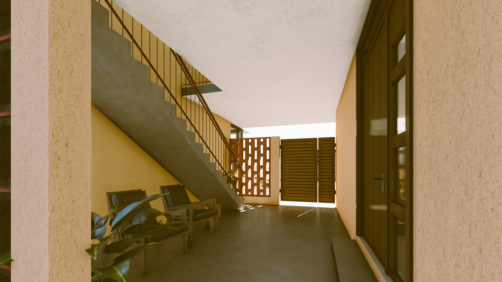
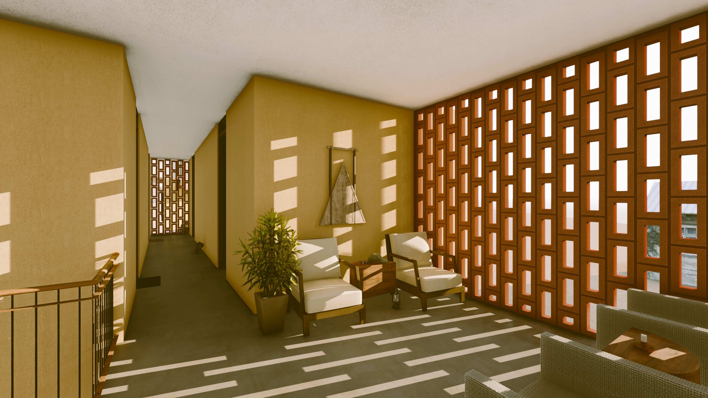
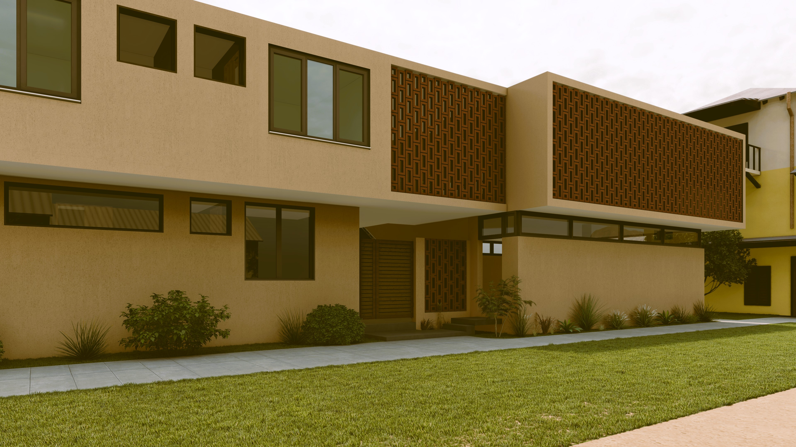
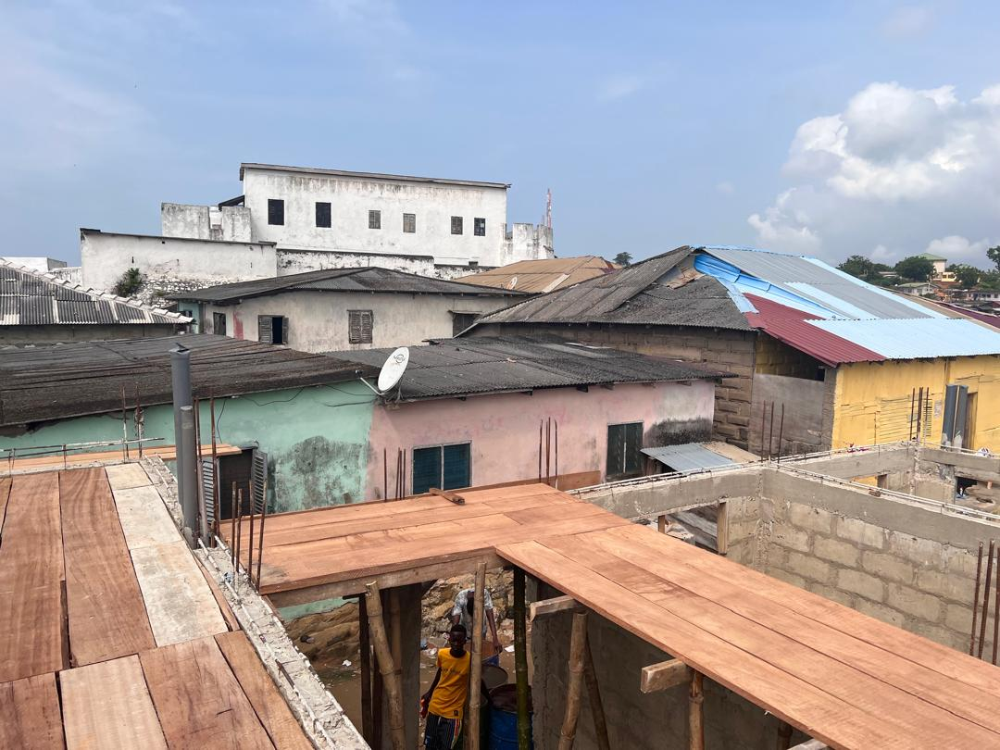
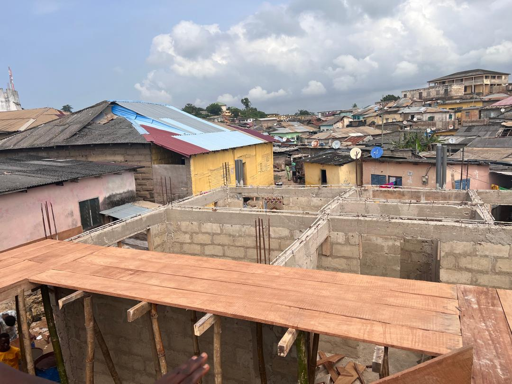
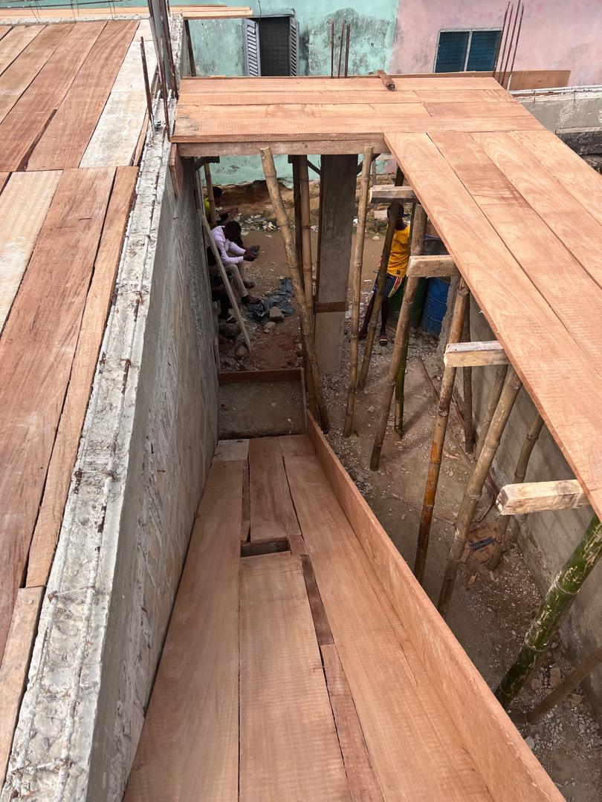
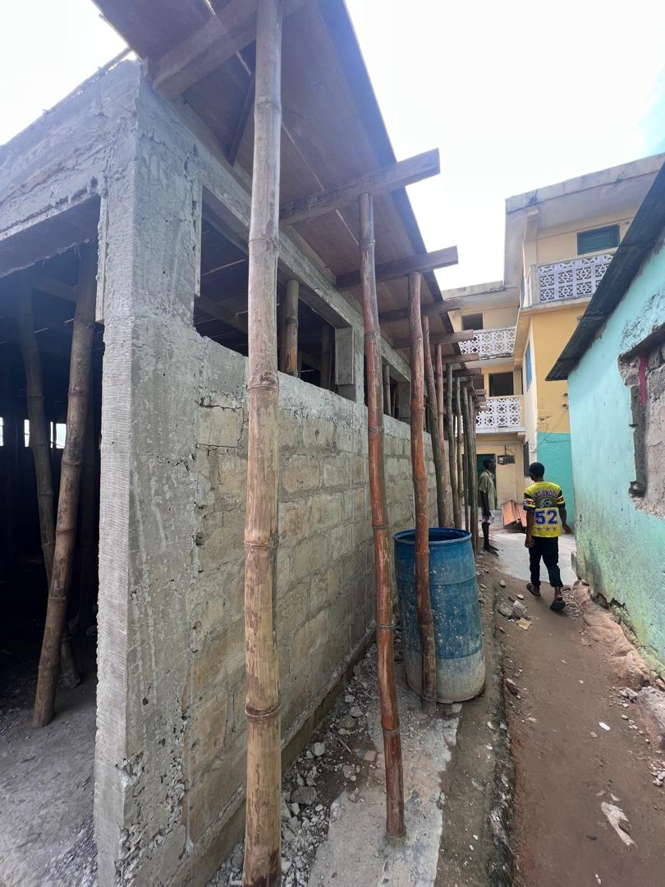
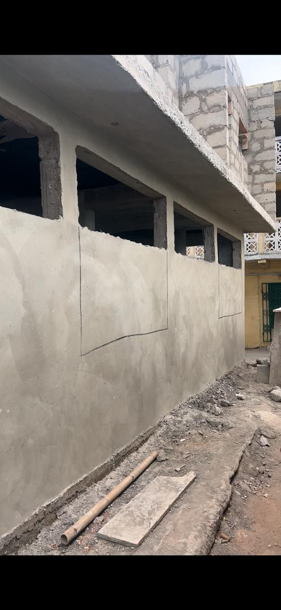
Bentsil Residence
Bentsil Residence is designed to provide luxury living in an urban setting. The residence features high-end finishes, spacious rooms, and a layout that prioritizes both privacy and comfort. Its elegant design is complemented by cutting-edge technology, offering a sophisticated living experience.
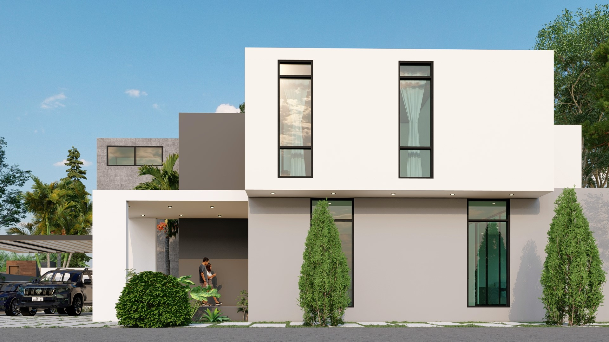
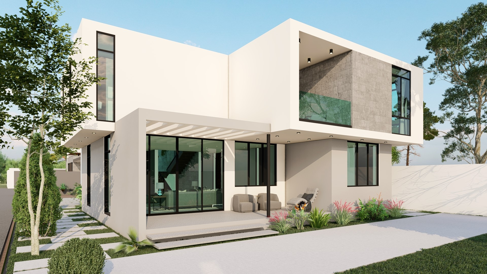
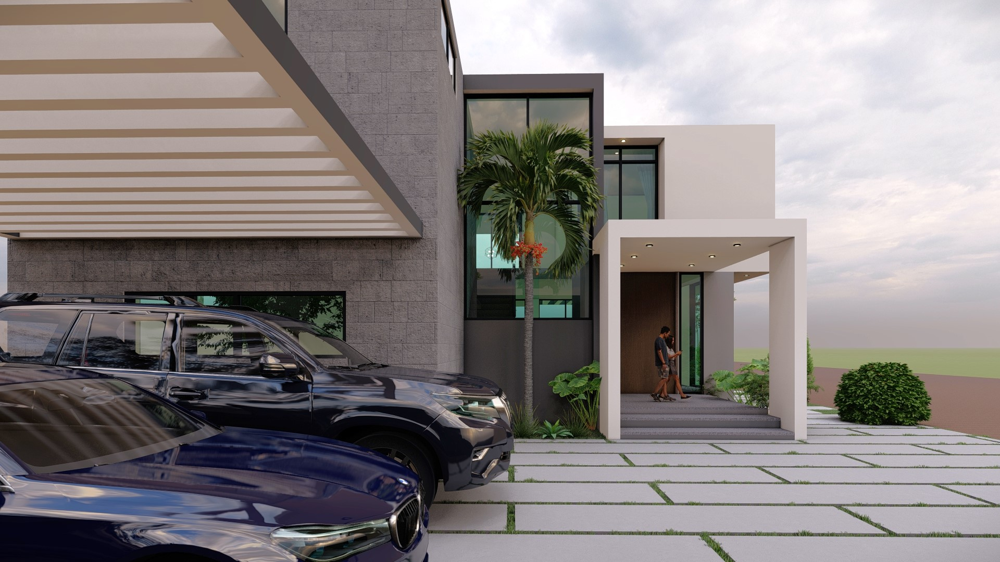
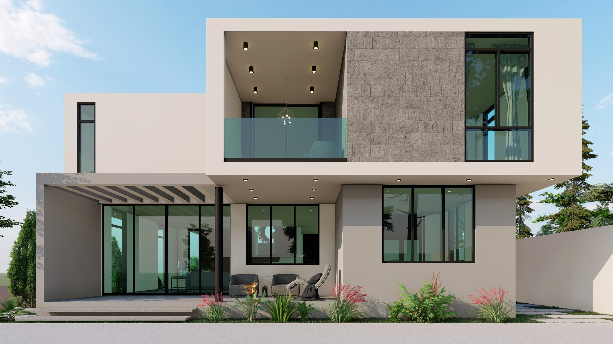
Villa Harmonia
Villa Harmonia is a serene retreat located in the countryside. The design emphasizes harmony with nature, featuring expansive gardens, water features, and natural materials. The villa offers a peaceful escape from the city, with spaces designed for relaxation and contemplation.
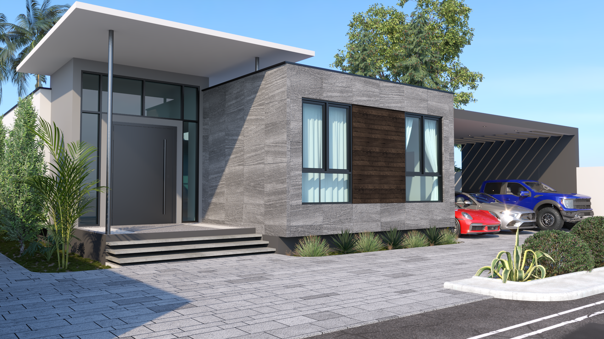
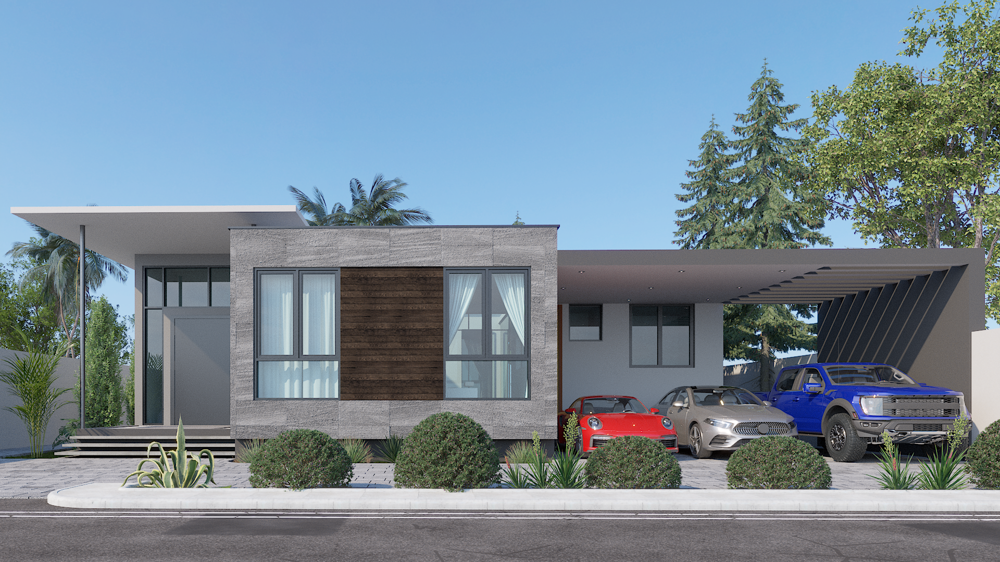
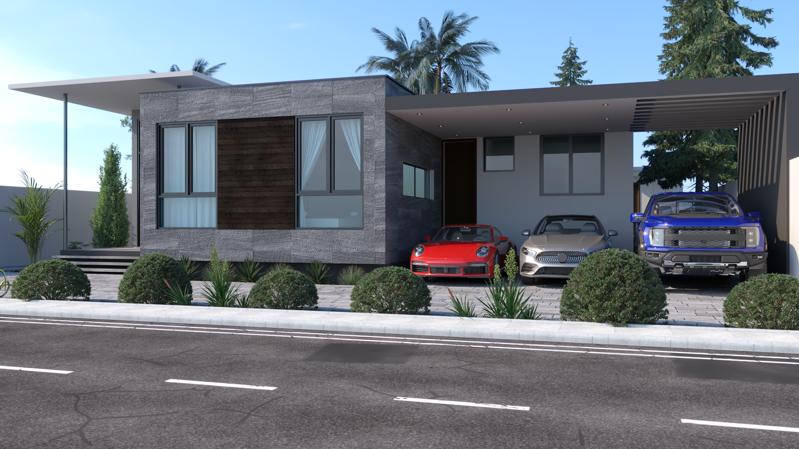
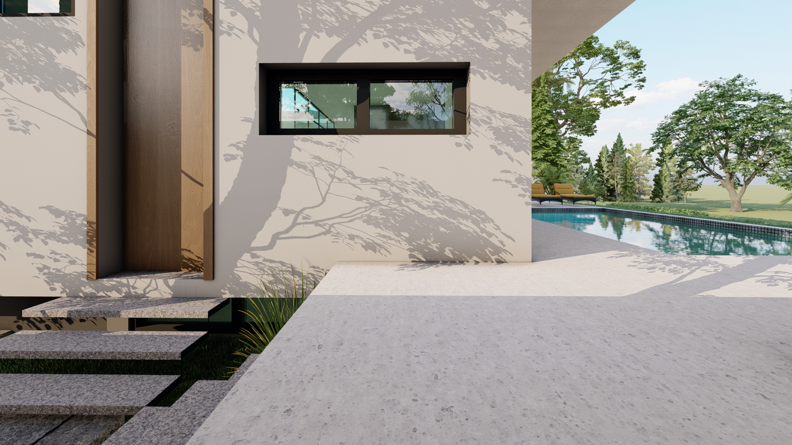
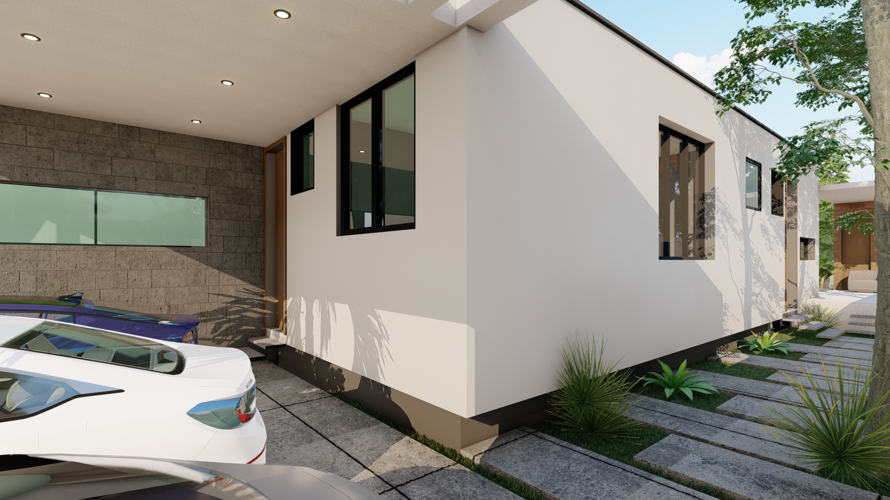
About Me
I am Samuel Kojo Otabil, an aspiring architect deeply passionate about the intersection of art and design. My journey has led me to explore and refine my skills in various creative fields, including music, photography, and architecture. Driven by a meticulous attention to detail, I have also delved into model making and product design.
"Simplicity, carried to an extreme, becomes elegance" - John Franklin
Contact
If you have any inquiries, project proposals, or just want to connect, feel free to reach out through the social media platforms listed below. I'm always open to discussing new ideas and opportunities.